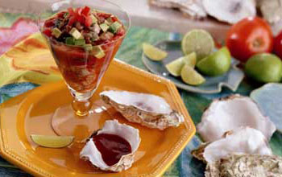
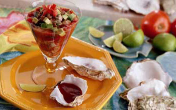

Receta | ¿Mucho frío?: Conoce estos cuatro cócteles que te mantendrán caliente en estos días | GASTRONOMIA | PERU21
2021.06.26 11:10
Últimas Noticias Política Videos Perú Lima Economía Videojuegos ¿Mucho frío?: Conoce estos cuatro cócteles que te mantendrán caliente en estos días Iniciar Lo último Coronavirus Perú Bicentenario del Perú Vacuna COVID-19 Francisco Sagasti AFP
Gastronomía
Compartir en facebook Compartir en twitter Compartir en LinkedIn Compartir en WhatsApp¿Mucho frío?: Conoce estos cuatro cócteles que te mantendrán caliente en estos días
Aprende a preparar estos sencillos cócteles para disfrutar en casa y pasar un invierno más cálido.
(AFP / John MACDOUGALL) Redacción PERÚ21redaccionp21@peru21.pe
Actualizado el 25/05/2020 04:08 p.m.Empieza a sentirse el frío limeño, y todos buscamos bebidas para alegrarnos el paladar. Hay múltiples opciones, pero para quienes deseen disfrutar estos días de otoño , te contamos de algunas alternativas para disfrutar de una bebida en una noche de relajo.
Andy Valderrama, brand ambassador de Jägermeister, nos ofrece múltiples posibilidades para servirlo como cóctel. Además de disfrutarlo en shots, también existen otras formas de beberlo. Se trata de un licor de hierbas elaborado a partir de 56 ingredientes cuidadosamente seleccionados y siguiendo la misma receta original desde hace más de 80 años.
Su sabor presenta rastros cítricos, de jengibre y anís estrellado, acompañado por una nota herbal ligeramente amarga. Para esta ocasión, te dejamos 4 opciones para prepararlos.
MIRA: Palta con verduras y jugo sobredosis de salud de don CuchoJÄGERMEISTER MULE
Un cruce de tradición y modernidad, esta combinación destaca las notas de jengibre de Jägermeister.
Ingredientes:
5 cda de Jägermeister 2 rodajas de limón 12 cda de Ginger Beer 1 rodaja de pepino Cubos de hieloPreparación:
Machacar las rodajas de limón en el fondo del vaso. Añadir cubitos de hielo Jägermeister y cerveza de jengibre, en ese orden. Agitar a todo ritmo Adornar con el pepinoTÉ DE CAZADORES
Un trago largo, con carácter, que conjuga el sabor del té con cítricos, un toque de dulzor y las notas herbáceas del Jägermeister.
Ingredientes:
1½ cucharaditas de mermelada de naranja 4 onzas de Jägermeister 2 onzas de jugo de limón recién exprimido 2 onzas de té negro 1½ cucharaditas de sirope de maple Cáscara de naranja, para decorarPreparación:
En una coctelera, verter todos los ingredientes. Agitar enérgicamente. Colar el contenido y servir en un vaso alto con abundante hielo. Decorar con la cáscara de naranja. Mira también: ¿Listos para el postre? Mira esta sencilla receta para preparar un Crocante de manzana Conoce esta forma sencilla de hacer alfajores de maicena con manjar a la olla Bolitas de almendras con pop corn caramelizado | VIDEOJÄGER MOJITO
Una versión del clásico mojito cubano, un cocktail aromático de sabores herbales y cítricos fácil de preparar.
Ingredientes:
2 onzas de Jägermeister 1½ limones cortados en rodajas 2 cucharadas de azúcar 1 manojo de hojas de hierbabuena, cerca de 12 hojas SodaPreparación:
En un vaso, poner el limón, la hierbabuena y el azúcar. Con ayuda de un mortero, macerar los ingredientes. Agregar el Jägermeister, los hielos y rellenar el resto del vaso con soda. Mezclar con una cuchara de coctelería.RESERVOIR DOG
El reservoir dog es uno de los más densos y deliciosos, pues su dulce y agradable sabor hará que quieras beberlo de un sorbo. Su elaboración es muy sencilla y rápida.
Ingredientes:
2 onzas de Jägermeister 2 onzas de licor de caféPreparación:
Poner abundante hielo en una copa tipo martini. Reservar para dejar enfriar, mínimo, cinco minutos. Aparte, en una coctelera, verter la crema de licor de café y el destilado. Agitar por treinta segundos. Una vez fría la copa, retirar los hielos y el agua que pueda tener, y servir. Disfrutar al momento. Opcional: Si deseas, puedes decorar la copa con un poco de sirope de chocolate.ESTE VIDEO TE PUEDE INTERESAR
Aprende a preparar un delicioso tacu tacu con lomo a lo pobreTE PUEDE INTERESAR
Palta con verduras y jugo sobredosis de salud de don Cucho Las irresistibles hamburguesas de quinua y lentejas [VIDEO] Nueve consejos para preparar un sabroso café casero Compartir en facebook Compartir en twitter Compartir en WhatsApp Copiar enlaceVEA TAMBIÉN
Cajas Municipales reprogramaron créditos por S/14.942 millones
Vizcarra sobre el ‘jugoso’ contrato de Richard Swing: “Debemos ser los más austeros” [VIDEO]
Jazmín Pinedo sobre el regreso de ‘EEG’: “Me encanta porque se ayudará a las personas que más necesitan”
Madonna comparte provocadora foto semidesnuda y desafía la censura de Instagram
Se detectaron 151 contagiados con COVID-19 solo hoy en cuatro estaciones de la Línea 1 y del Metropolitano
TAGS RELACIONADOS
cocteles
frío
recetas
otoño
ÚLTIMAS NOTICIAS
‘Rita’, la nueva línea de vinos en lata dirigida a la mujer empoderada
“Huerta-Chinén: Esposo de la conocida cocinera, José Huerta, murió
El Salón del Vino Peruano celebra su V edición presentando nuevas experiencias
NO TE PIERDAS
Contenido de Peru21
“Élite”: estos serán los actores que no aparecerán durante la quinta temporada
“Élite” 5: quiénes son los actores que ingresarán al elenco durante la temporada 5
Rafael Amaya: su personaje de “El señor de los cielos”, ¿realmente lo llevó a las adicciones?
Siguiente artículo Directora Periodística: Cecilia Valenzuela Diario Perú21: Jr. Jorge Salazar Araoz. Nro. 171 Urb. Santa Catalina, La Victoria, Lima Copyright © Peru21.pe Grupo El Comercio - Todos los derechos reservados- Cinco recetas de cócteles especiales para el frío de las .
- 16 ideas de Coctel frio | recetas de comida, recetas para .
- Los 5 mejores cócteles para combatir el frío este invierno
- Cócteles para quitar el frío del cuerpo | Recetas El Comidista .
- 63 ideas de Coctel frio | comida, aperitivos, recetas para cocinar
- Receta de Cóctel de café frío sin alcohol . - Pinterest
- Cócteles de invierno: receta y cómo hacer tragos y bebidas .
- Cómo Hacer Cócteles Fáciles y Buenos: Mejores Recetas
- Receta de Cóctel de café frío sin alcohol - Hogarmania
- Receta de Cóctel de café frío con alcohol - Hogarmania .
- Cinco recetas de cócteles especiales para el frío de las .
- 16 ideas de Coctel frio | recetas de comida, recetas para .
- Los 5 mejores cócteles para combatir el frío este invierno
- Cócteles para quitar el frío del cuerpo | Recetas El Comidista .
- 63 ideas de Coctel frio | comida, aperitivos, recetas para cocinar
- Receta de Cóctel de café frío sin alcohol . - Pinterest
- Cócteles de invierno: receta y cómo hacer tragos y bebidas .
- Cómo Hacer Cócteles Fáciles y Buenos: Mejores Recetas
- Receta de Cóctel de café frío sin alcohol - Hogarmania
- Receta de Cóctel de café frío con alcohol - Hogarmania .
 
